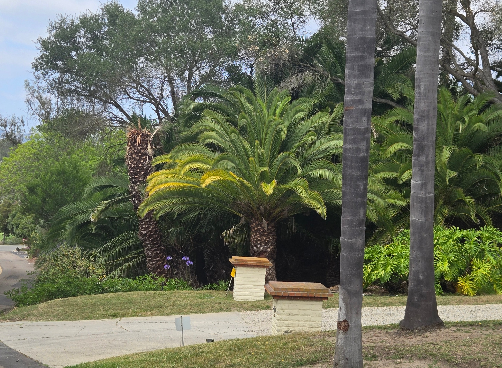
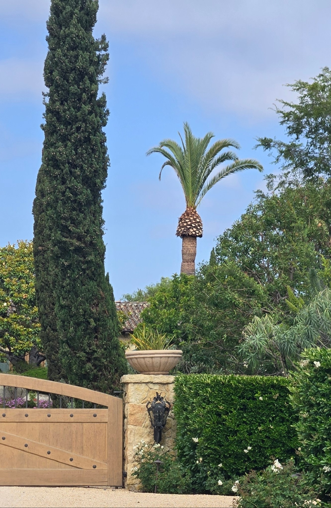
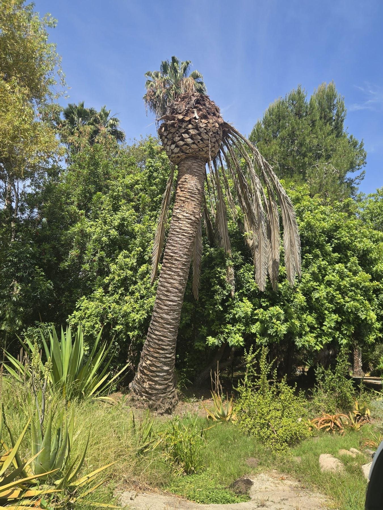

Specialized care for mature Canary Island Date Palms, specimen palms, and valuable landscape palms throughout Rancho Santa Fe, the Covenant, Fairbanks Ranch, Del Dios, Lake Hodges, and nearby estate communities.
San Diego Palm Protection helps Rancho Santa Fe homeowners document mature palm assets through photographic records, visible-condition notes, seasonal context, and licensed-provider questions when appropriate.
San Diego Palm Protection currently focuses on palm documentation, photographic condition records, and educational resources. Pesticide application, pest-control treatment, palm pruning, removal, and installation services are not currently offered.
Text or email photos of your palm for an educational photo review. For Rancho Santa Fe estates, full-palm photos, crown close-ups, irrigation context, and access constraints are especially helpful.
Rancho Santa Fe properties often use mature palms as estate landscape anchors - framing long driveways, entries, courtyards, hillside views, and premium outdoor spaces where appearance and continuity matter.
Large Canary Island Date Palms are especially visible from roads, driveways, and estate approaches. Mature Canary Island Date Palms often contribute significantly to the long-term character and appearance of Rancho Santa Fe estates. When a mature palm declines, replacement can be difficult, expensive, and rarely equal in scale or character.

Mature palms in Rancho Santa Fe often function as major visual anchors for estate landscapes.

Over-trimming can reduce canopy fullness and change the appearance of valuable mature palms.

Del Dios, Lake Hodges, and nearby hillside properties often require careful attention to irrigation, exposure, and long-term palm health.
Rancho Santa Fe has already recognized South American palm weevil as a serious local palm health concern. The Rancho Santa Fe Association previously hosted community education on palm weevil impacts affecting Rancho Santa Fe and Southern California, including treatment educationning and prevention education with UC Riverside palm weevil expert Dr. Mark Hoddle.
For RSF property owners, the takeaway is simple: mature Canary Island Date Palms and other high-value palms should be monitored before visible decline becomes advanced. Once crown collapse, spear loss, or severe internal feeding is obvious, treatment options may become much more limited.
Local reference: Rancho Santa Fe Association - Palm Weevil Expert Proposes Treatment Education. This local reference is provided for awareness only; San Diego Palm Protection is not affiliated with or endorsed by the Rancho Santa Fe Association.
San Diego Palm Protection provides owner-led photographic documentation, visible-condition notes, and educational stewardship resources for mature palms in Rancho Santa Fe, Fairbanks Ranch, and surrounding North County communities.
Rancho Santa Fe's estate landscapes, hillside settings, mature plantings, and high-visibility palms make palm care different from basic yard maintenance.
Around Rancho Santa Fe, mature palms are often part of larger, intentional landscapes where one declining Canary Island Date Palm can affect the entire look of the property. We pay close attention to canopy density, color, new spear growth, pruning history, irrigation consistency, soil moisture after treatment, and signs of stress that may become more visible during warm or dry periods.
For Canary Island Date Palms in particular, South American Palm Weevil awareness matters. Rancho Santa Fe homeowners with large CIDPs should not wait until the crown looks severely damaged before asking questions. Photos over time, regular observation, and quarterly care can help create a better baseline before decline becomes advanced.
Rancho Santa Fe's estate landscapes, hillside irrigation patterns, and mature palms make consistent observation and care especially important for homeowners with valuable palms.
Our quarterly palm documentation resources are designed for homeowners who want mature estate palms tracked consistently - not forgotten until something looks wrong.
Documentation scope depends on palm size, site access, and visible concerns.
A quarterly documentation rhythm for mature palms, based on property context and the level of recordkeeping needed.
Review scope depends on palm size, site access, visible concerns, and available photos.
An educational photo review for owners with palm health concerns, visible decline, seasonal questions, or notes to organize before contacting an appropriately licensed provider.
This can be useful for Rancho Santa Fe homeowners who want educational photo context before deciding whether ongoing documentation or outside provider referral questions make sense.
San Diego Palm Protection is an owner-operated service focused specifically on mature palms. The emphasis is direct owner attention, consistent care, and preserving valuable landscape assets over the long term.
Learn more about mature palm care, Canary Island Date Palms, South American Palm Weevil awareness, premium palm sourcing, and local palm observations in North County San Diego.
Text or email a few photos of your palm or property. We can talk through what you are seeing and whether quarterly care, a one-time photographic condition review, or closer monitoring makes sense.
Call or Text 262-492-3135